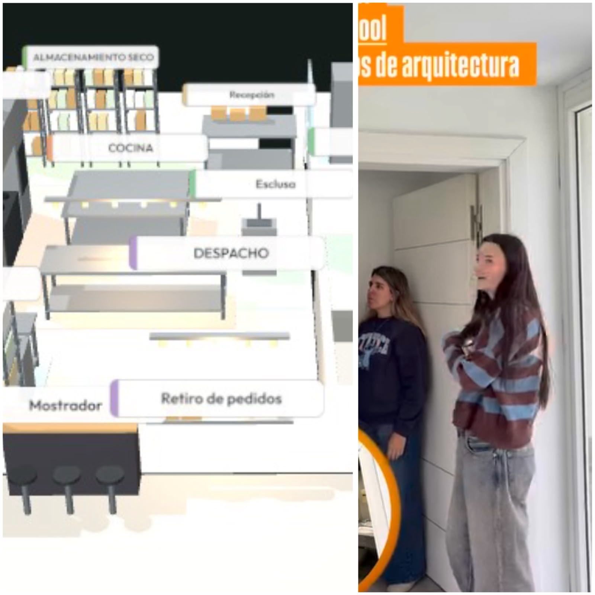

Considero que cuando me enfrento a una dificultad intentó analizar la situación, tener en cuenta las distintas necesidades y buscar soluciones posibles. Un ejemplo fue mi pasantía en GOTFA, donde tuve que diseñar una nueva distribución para una cocina sin gluten, respetando las normas de higiene y sin modificar la estructura del edificio. Tuve que investigar, evaluar diferentes opciones y pensar cómo aprovechar mejor el espacio. Por eso, considero que tengo la habilidad de resolución de problemas complejos, porque puedo analizar una situación desde diferentes perspectivas y buscar alternativas que se adapten a las condiciones que tengo.
Clickea para ver mi trabajo durante la pasantia
Volver a las habilidades© 2026 - Mi Portfolio